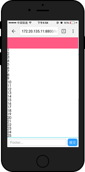
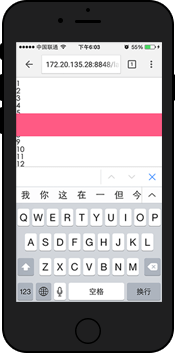
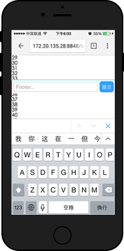
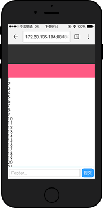

iOS下的 Fixed + Input BUG现象
问题复现
让我们先举个例子，最直观的说明一个在ios中input + fixed布局，可能使用如下布局
转载 http://efe.baidu.com/1
2
3
4
5
6
7
8
9
10
11
12
13
14
15
16
17
18
19
20
21
22
23
24
25
26
27
28
29
30
31
32
33
34
35
36
37
38
39
40
41
42
43
44
45
46
47
48
49
50
51
52
53
<html lang="en">
<head>
<meta charset="UTF-8">
<meta name="viewport" content="width=device-width, initial-scale=1.0">
<meta http-equiv="X-UA-Compatible" content="ie=edge">
<title>Document</title>
</head>
<style>
header, footer, main {
display: block;
}
header {
position: fixed;
height: 50px;
left: 0;
right: 0;
top: 0;
}
footer {
position: fixed;
height: 34px;
left: 0;
right: 0;
bottom: 0;
}
main {
margin-top: 50px;
margin-bottom: 34px;
height: 2000px
}
</style>
<body class="layout-fixed">
<!-- fixed定位的头部 -->
<header>
</header>
<!-- 可以滚动的区域 -->
<main>
<!-- 内容在这里... -->
</main>
<!-- fixed定位的底部 -->
<footer>
<input type="text" placeholder="Footer..."/>
<button class="submit">提交</button>
</footer>
</body>
</html>
然后看起来就是下面这个样子。拖动页面时 header 和 footer 已经定位在了对应的位置，目测没问题了。

但接下来问题就来了！如果底部输入框软键盘被唤起以后，再次滑动页面，就会看到如下图所示：
 
软键盘唤起后，页面的 fixed 元素将失效（即无法浮动，也可以理解为变成了 absolute 定位），所以当页面超过一屏且滚动时，失效的 fixed 元素就会跟随滚动了。
这就是ios上fixed元素和输入框的bug,其中不仅陷入于type=”text”的输入框，凡是软键盘（比如时间选择器、select选择等等）被唤起，都会遇到同样的问题。
解决思路
虽然 isScroll.js 可以很好的解决 fixed 定位滚动的问题，但是不在万不得已的情况下，我们尽量尝试一下不依赖第三方库的布局方案，以简化实现方式。这里抛砖引玉作为参考。
即使在ios下由于软键盘唤出后，页面fixed元素会失效，导致跟随页面一起滚动，那么页面不会过长出现滚动，那么即便fixed元素失效，也无法跟随页面滚动，也不会出现上面的问题了，其实就是内部滚动1
2
3
4
5
6
7
8
9
10
11
12
13
14
15
16
17
18
19<body class="layout-scroll-fixed">
<!-- fixed定位的头部 -->
<header>
</header>
<!-- 可以滚动的区域 -->
<main>
<div class="content">
<!-- 内容在这里... -->
</div>
</main>
<!-- fixed定位的底部 -->
<footer>
<input type="text" placeholder="Footer..."/>
<button class="submit">提交</button>
</footer>
</body>
1 | header, footer, main { |
在原始输入法下， fixed 元素可以定位在页面的正确位置。滚动页面时，由于滚动的是 main 内部的 div，因此 footer 没有跟随页面滚动。
上面貌似解决了问题，但是如果在手机上实际测试一下，会发现 main 元素内的滚动非常不流畅，滑动的手指松开后，滚动立刻停止，失去了原本的流畅滚动特性。百度一下弹性滚动的问题，发现在 webkit 中，下面的属性可以恢复弹性滚动。1
-webkit-overflow-scrolling: touch;
在 main 元素上加上该属性，嗯，丝般顺滑的感觉又回来了！1
2
3
4
5
6
7
8
9
10main {
/* main绝对定位，进行内部滚动 */
position: absolute;
top: 50px;
bottom: 34px;
/* 使之可以滚动 */
overflow-y: scroll;
/* 增加该属性，可以增加弹性 */
-webkit-overflow-scrolling: touch;
}
另外，这里的 header 和 footer 使用的是 fixed 定位，如果考虑到更老一些的 iOS 系统不支持 fixed 元素，完全可以把 fixed 替换成 absolute 。测试后效果是一样的。
至此一个不依赖第三方库的 fixed 布局就完成了。
Android 下布局
谈到了 iOS ，也来简单说一下 Android 下的布局吧。
在 Android2.3+ 中，因为不支持 overflow-scrolling ，因此部分浏览器内滚动会有不流畅的卡顿。但是目前发现在 body 上的滚动还是很流畅的，因此使用第一种在 iOS 出现问题的 fixed 定位的布局就可以了。
如果需要考虑 Android2.3 以下系统，因为不支持 fixed 元素，所以依然要需要考虑使用 isScroll.js 来实现内部滚动。
其实在 fixed 和输入框的问题上，基本思路就是： > 由于 fixed 在软键盘唤起后会失效，导致在页面可以滚动时，会跟随页面一起滚动。因此如果页面无法滚动，那么 fixed 元素即使失效，也不会滚动，也就不会出现 bug 了。
所以可以在这个方面去考虑解决问题。
其他的一些细节处理
在细节处理上，其实还有很多要注意的，挑几个实际遇到比较大的问题来说一下：
有时候输入框 focus 以后，会出现软键盘遮挡输入框的情况，这时候可以尝试 input 元素的 scrollIntoView 进行修复。
在 iOS 下使用第三方输入法时，输入法在唤起经常会盖住输入框，只有在输入了一条文字后，输入框才会浮出。目前也不知道有什么好的办法能让唤起输入框时正确显示。这暂时算是 iOS 下的一个坑吧。
有些第三方浏览器底部的工具栏是浮在页面之上的，因此底部 fixed 定位会被工具栏遮挡。解决办法也比较简单粗暴——适配不同的浏览器，调整 fixed 元素距离底部的距离。
最好将 header 和 footer 元素的 touchmove 事件禁止，以防止滚动在上面触发了部分浏览器全屏模式切换，而导致顶部地址栏和底部工具栏遮挡住 header 和 footer 元素。
在页面滚动到上下边缘的时候，如果继续拖拽会将整个 View 一起拖拽走，导致页面的“露底”。

为了防止页面露底，可以在页面拖拽到边缘的时候，通过判断拖拽方向以及是否为边缘来阻止 touchmove 事件，防止页面继续拖拽。
以上面内滚动 layout-scroll-fixed 布局为例，给出一段代码作为参考：1
2
3
4
5
6
7
8
9
10
11
12
13
14
15
16
17
18
19
20
21
22
23
24
25
26
27
28
29
30
31
32
33
34// 防止内容区域滚到底后引起页面整体的滚动
var content = document.querySelector('main');
var startY;
content.addEventListener('touchstart', function (e) {
startY = e.touches[0].clientY;
});
content.addEventListener('touchmove', function (e) {
// 高位表示向上滚动
// 底位表示向下滚动
// 1容许 0禁止
var status = '11';
var ele = this;
var currentY = e.touches[0].clientY;
if (ele.scrollTop === 0) {
// 如果内容小于容器则同时禁止上下滚动
status = ele.offsetHeight >= ele.scrollHeight ? '00' : '01';
} else if (ele.scrollTop + ele.offsetHeight >= ele.scrollHeight) {
// 已经滚到底部了只能向上滚动
status = '10';
}
if (status != '11') {
// 判断当前的滚动方向
var direction = currentY - startY > 0 ? '10' : '01';
// 操作方向和当前允许状态求与运算，运算结果为0，就说明不允许该方向滚动，则禁止默认事件，阻止滚动
if (!(parseInt(status, 2) & parseInt(direction, 2))) {
stopEvent(e);
}
}
});